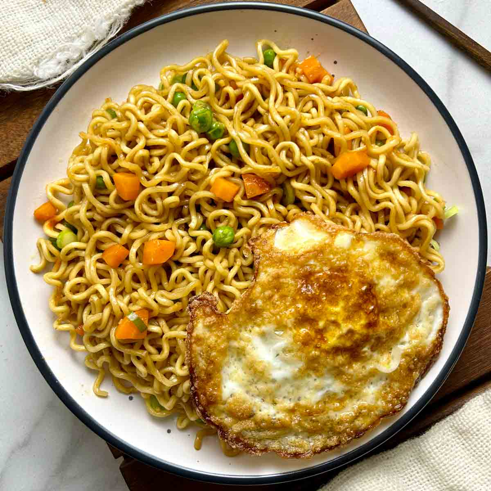

Home
Indomie

Fried Indomie
Indomie is a popular brand of instant noodles produced by the Indonesian company Indofood. Launched in 1972, the name is a portmanteau of "Indo" (short for Indonesian) and "mi" (the Indonesian word for noodles).
Ingredients
- Pack of Indomie
- 1 Chicken Egg
- 1 Clove of Garlic
Steps
Boil the noodles: Bring 350 ml of water to a rolling boil in a small pot. Add the Indomie noodles and cook for 3 minutes until soft.
Mix the sauces: While the noodles cook, pour the oil, sweet soy sauce, chili sauce, and seasoning powder onto a serving plate.
Drain the water: Strain the water completely from the cooked noodles.